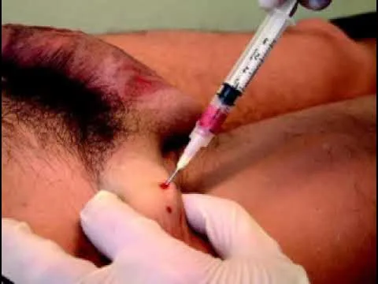
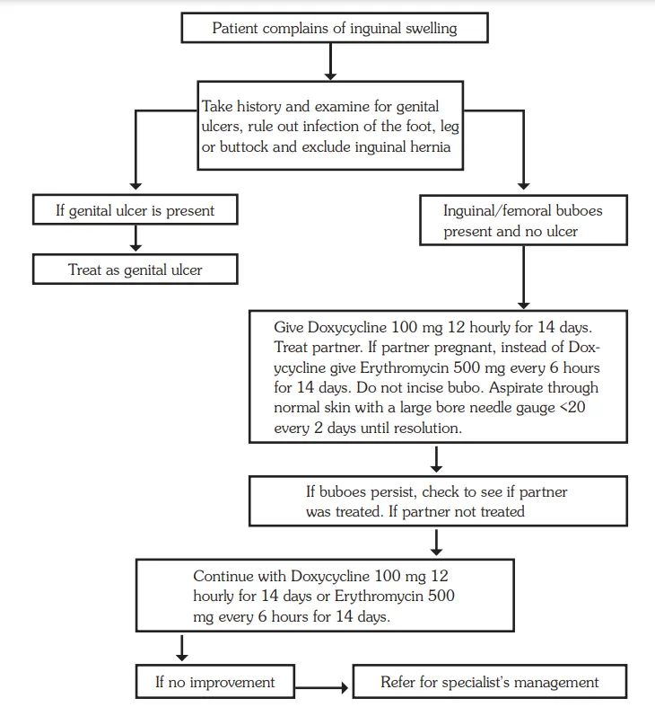

Expanded Nursing Uganda Explanation
Inguinal Buboes Syndrome should be reviewed through safe maternal and newborn assessment, early recognition of danger signs, respectful communication and timely referral. Connect the definition to vital signs, bleeding, fetal or newborn wellbeing, patient education and local protocol requirements.
01 Inguinal Buboes Syndrome
They are often locally described as “ grenades .”
Case Definition:
Inguinal Buboes Syndrome is characterized by the clinical manifestation of localized swellings or enlarged lymph glands in the groin and femoral area.
02 Aetiology
It is crucial to differentiate sexually transmitted causes, specifically LGV and chancroid, from non-sexually transmitted local and systemic infections, such as lower limb or gluteal region infections. Exclusion of these non-STI causes is essential for accurate diagnosis. Other causes inclide;
- Chlamydia strains: lymphogranuloma venereum (LGV).
- Haemophilus ducreyi : chancroid.
- Treponema pallidum : syphilis.
03 Clinical features
These swellings may present with pain and fluctuation and are commonly associated with Lymphogranuloma venereum (LGV) and chancroid. In the case of chancroid, an observable ulcer may accompany the buboes.
- Excessively swollen inguinal glands.
- Pain, tenderness.
- Swellings may become fluctuant if pus forms.
04 Treatment Protocol: Inguinal Buboes Syndrome
Examination and Differential Diagnosis to rule out Non-STI Causes :
- Thorough clinical examination to rule out non-sexually transmitted infections causing inguinal swellings.
- Rule out infections in the foot, leg, or buttock.
- Exclude the possibility of an inguinal hernia.
- Differential diagnosis to consider both STI-related and non-STI-related etiologies.
Follow the Management Flow Chart:
- Adhere to the syndromic management flow chart for inguinal buboes.
- Treatment options may include antibiotics and other therapeutic measures based on the underlying cause.
- If a genital ulcer is present, initiate treatment following the established protocol.
- Administer doxycycline 100 mg orally every 12 hours for a duration of 14 days.
- Ensure treatment for both the patient and their partner.
Pregnant Partner Consideration:
- In cases involving a pregnant partner, substitute doxycycline with erythromycin.
- Administer erythromycin 500 mg orally every 6 hours for a period of 14 days.
Aspiration of Fluctuant Swellings:
- Fluctuant swellings, indicative of fluid accumulation, should be aspirated daily.
- Do not incise the bubo; instead, aspirate through normal skin using a large bore needle (gauge <20) every 2 days until resolution.
- As an alternative to doxycycline, azithromycin 1 g as a single dose can be considered.
- Caution: Never incise fluctuant swellings, as this may lead to sinus formation.
Address Underlying STI:
- If LGV or chancroid is diagnosed, initiate appropriate antibiotic therapy as per established guidelines.
- Consider partner notification and treatment to prevent further transmission.
Monitoring and Follow-up:
- Regular monitoring of the swelling’s progression and response to treatment.
- Follow-up examinations to assess resolution and ensure the absence of complications.
Persistent Bubo Treatment:
- If the inguinal bubo persists and the partner was not treated, continue the prescribed treatment for an additional 14 days.
Referral for Specialist Management:
- In cases where the condition does not show improvement, consider referral for specialist management.
05 Lower Abdominal Pain Syndrome
Lower abdominal pain syndrome stands out as one of the most prevalent and serious STI syndromes among women, bearing significant reproductive health and socio-economic consequences.
Its presentation can be acute or chronic, posing diagnostic challenges due to numerous potential differential diagnoses.
Patients usually present with
- abdominal pain,
- Bleeding,
- dyspareunia,
- meno-metrorrhagia,
- fever, and occasional vomiting.
Comprehensive evaluation involves assessing
- abdominal tenderness,
- cervical motion,
- adnexal tenderness,
- uterine tube enlargement, and pelvic masses.
- Elevated temperature may be indicative, requiring thorough bimanual vaginal examination.
06 Case Definition:
Symptoms of lower abdominal pain and pain during sexual intercourse, coupled with examination findings such as vaginal discharge, lower abdominal tenderness on palpation, or a temperature > 38 degrees Celsius.
07 Aetiology :
This syndrome strongly suggests pelvic inflammatory disease (PID), encompassing salpingitis and/or endometritis. Causative agents may include gonococcal, chlamydial, or anaerobic infections.
08 Management:
Referral for Surgical Emergencies:
- Patients presenting with symptoms of other surgical emergencies resembling lower abdominal pain syndrome should be promptly referred for inpatient admission and management.
Syndromic Antibiotic Treatment:
- Ciprofloxacin, metronidazole, and ceftriaxone are prescribed, targeting the likely causative agents due to the challenge of specific diagnosis.
- Outpatient treatment is extended due to the chronic nature of the condition.
Intrauterine Contraceptive Devices (IUCD):
- Patients with IUCDs, predisposing factors for PID, should have the device removed after initiating treatment for at least 2 days.
- Contraceptive counseling is essential for these patients.
Comprehensive STI Case Management:
- Include other components such as partner notification and treatment, education on treatment compliance, and promotion of preventive measures.
- Continuous monitoring and evaluation to address potential complications and ensure treatment effectiveness.
09 Nursing Uganda Clinical Lens
Use Inguinal Buboes Syndrome as a practical nursing topic, not only a memorized definition. Link cause, transmission, incubation, clinical features, treatment support and prevention.
- What to understand first: define inguinal buboes syndrome, identify the normal or expected pattern, then explain what changes when the patient is unwell.
- Why it matters in care: the nurse must recognize risk early, explain findings clearly, document accurately and know when to escalate.
- How to revise it: connect each point to assessment, nursing diagnosis or care problem, intervention, rationale and evaluation.
10 Assessment Guide
- Temperature, pulse, respiratory status, hydration, pain, rash, wounds, stool, urine or sputum changes.
- Exposure history, travel, contacts, vaccination status and comorbidities.
- Specimen orders, isolation needs, antimicrobial history and danger signs.
11 Nursing Priorities, Rationales and Outcomes
- Use standard precautions and transmission-based precautions where needed.
- Support hydration, nutrition, medicines, monitoring and early referral for severe disease.
- Teach prevention, adherence, hygiene, safe water, vector control or contact tracing as relevant.
The rationale for these priorities is patient safety: nursing actions should prevent deterioration, reduce discomfort, support recovery and create clear evidence for the next caregiver.
- Expected outcome: Symptoms improve, complications are detected early, transmission risk is reduced and treatment is completed correctly.
12 Patient Teaching and Revision Check
- Explain inguinal buboes syndrome in simple language the patient or caregiver can repeat back.
- Teach warning signs, medicine or follow-up instructions, hygiene or lifestyle points where relevant.
- For exams, prepare a short answer using: definition, causes or risk factors, signs, assessment, management, complications and prevention.
- For ward practice, document baseline findings, actions taken, patient response and the plan for review.
Illustrations and Diagrams (4)




Related Video Lectures
Watch nursing lecture videos on YouTube for this topic. Opens in a new tab.
Watch on YouTubeExternal link: YouTube may use its own cookies and terms. Nursing Uganda is not affiliated with YouTube.